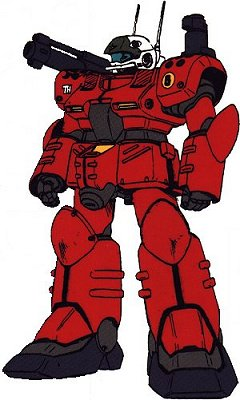

| RX-77D GUNCANNON MPT Artillery Fire-Support Mass Production Federation Mobile Suit |
|
|  | |
 RPG quick stats sheet
RPG quick stats sheet
Armor Rating: 6.7
Speed Rating: Space-5.7 Ground-4.3 Air-3.9 Water-2.2 Moon-5.2 Jupiter-.1
Maneuverability Rating: Space-6.5 Ground-4.8 Air-3.4 Water-2.5 Moon-6 Jupiter-.1
General and Technical Data |
|
|
Model number: RX-77D Code name: Guncannon Mass Production Type Unit type: mass production mid-range fire support mobile suit Operator: Earth Federation
Dimensions: overall height 18.1 meters; head height 17.5 meters Weight: empty 51.2 metric tons; max gross 70.2 metric tons Construction: titanium/ceramic composite Powerplant: Minovsky type ultracompact fusion reactor, output rated at 1410 kW Propulsion: rocket thrusters: 3 x 26500 kg, 2 x 7000 kg Performance: thruster acceleration 1.33 G, maximum ground running speed 78 km/h Equipment and design features: sensors, range 7300 meters Fixed armaments: 2 x 60mm vulcan gun, fire-linked, mounted in head; 2 x 200mm cannon, mounted in backpack over shoulders, variable fire-linked or independant, barrels fold when not in use Optional hand armaments: 100mm machinegun, clip-fed, 32 rounds per clip; beam spray gun, 10 round charge; 3x grenade Magnetic Storage Racks: 3, primary rack on backpack, one additional rack on either hip. |
|
| Technical and Historical Notes | |
|
Of the three pre-production Federation mobile suits, the RX-77 Guncannon lineup had the most success in achieveing mass production. The Gundam was deemed too costly (even though a limited number were built exclusively for land combat) and the Guntank failed to be versatile enough, but the Guncannon fit right in with the Federation's war policy.
The RX-77D Guncannon Mass Production Type is built off the same frame as the original Guncannon unit. It is not armored with the highly durable lunar titanium armoring as a cost cutting measure, but it is still quite tough in combat. Three gigantic thrusters on its backpack give it excellent mobility for such a heavy (by Federal standards) total weight, allowing it to quickly relocate while attacking an enemy at long range, and also offer a good reaction time in close-quarters combat.
The Guncannon MPT is armed with the traditional set of head-mounted vulcan guns. Its primary assault weapons are a set of collapsible 200mm artillery cannons. These have a heavy payload and are very accurate at range, as well as posess a good refire rate. The barrels fold and are stowed inside the Guncannon's backpack when not in use. The Guncannon MPT also carries standard GM weaponry to increase its ability to lay down a heavy suppressing barrage. While its reactor is sufficient to carry a full fledged beam rifle, due to supply issues very few Guncannon MPTs are equipped with them.
|
| Weapons and Features | |
|

|
|